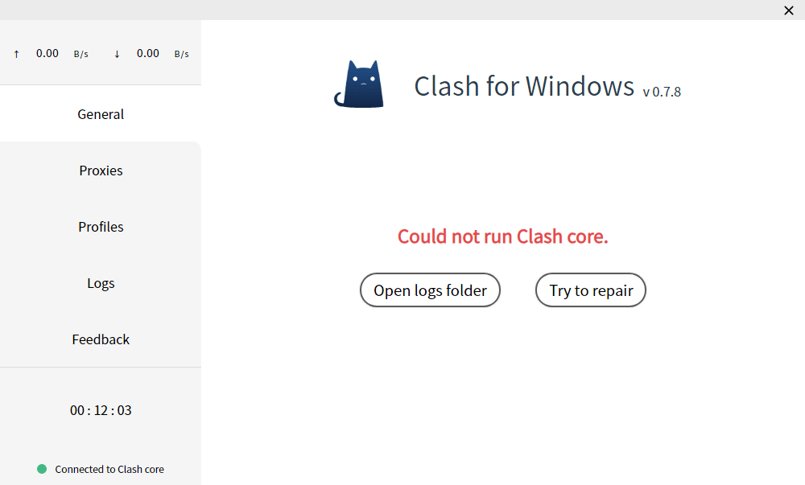

配置文件
格式
Clash配置文件格式为YAML，具体写法参考：https://github.com/Dreamacro/clash#config
CFW启动的过程会使用到两个配置文件，分别是：
Home Directory/config.yamlHome Directory/profiles/xxxx.yaml
config.yaml
这是Clash的启动文件，位于Home Directory中，如果此文件有错，则Clash核心将无法启动，一般会出现如下界面：

此文件关乎Clash核心是否能正常启动，如非必要，请勿更改
Profiles/xxxx.yaml
Profiles文件夹下文件均由用户导入，CFW统一生成的，一般命名为时间戳
这些文件可以不完整，通常只需要有：proxies/proxy-groups/rules三个字段组成即可：
proxies:
- name: Shadowsocks
type: socks5
server: 127.0.0.1
port: 1080
proxy-groups:
- name: Proxy
type: select
proxies:
- Shadowsocks
rules:
- 'MATCH,DIRECT'
除此外，还可以添加dns/hosts字段，但在使用CFW时不建议添加
加载过程
CFW启动流程如下：
- 使用基础配置文件config.yaml启动Clash核心
- 根据用户上次使用的配置文件（Profiles/xxxxx.yml）进行恢复
- 恢复用户上次操作的策略情况
解读
步骤1完成后，Clash会按照config.yaml设置启动
步骤2完成后，用户配置文件里的proxies/proxy-providers/proxy-groups/rule-providers/rules/dns这几个字段的内容会被替换到Clash里面，除了上面值几个字段，其他的内容均不会替换（这就是Profiles里配置文件可以不完整的原因）
原因
之所以不进行全替换，是因为每一个配置文件所设定的端口号可能是不一样的，这样每次切换配置文件后，需要重新设置系统代理以及其他软件的代理端口，这显然太麻烦
所以采用上面的方案，使得用户配置文件以Plugin的方式加载 如果需要修改端口号，只需要在General界面点击Text Mode Edit打开config.yaml文件编辑并保存即可，Clash for Windows会在检测到文件变化后自动为你重启Clash核心